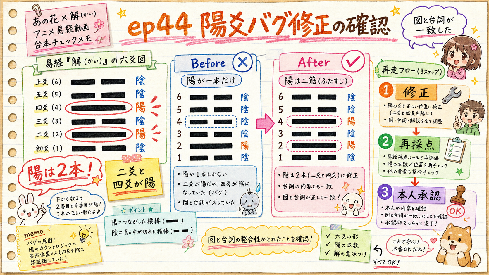

種明かし（幕3）の「陽の本数」が六爻図と矛盾していた1点を修正しました。中身を確認いただき、OKなら重い harness 再走に進みます。
010100＝陽2本（二爻・四爻）。だが台本は「陽が一本だけ」と語り、六爻図GUA6（陽2本を決定論描画）と矛盾していた。
解（第40卦・雷水解） binary_le = 010100（little-endian＝初陰・二陽・三陰・四陽・五陰・上陰）
䷧ 上爻 ▬ ▬（陰）
五爻 ▬ ▬（陰）
四爻 ▬▬▬（陽）← 上卦 震＝雷・動き の主爻
三爻 ▬ ▬（陰）
二爻 ▬▬▬（陽）← 下卦 坎＝水・悩み の主爻
初爻 ▬ ▬（陰）
出典：db/hexagrams.json 卦40（binary_le / upper=Thunder / lower=Water）。六爻図カード GUA6 はこの binary_le から陽2本を決定論描画する＝図は必ず陽2本。台詞が「陽1本」だと物証（図）と語りが食い違い、"証拠で殴る回"の土台が崩れる。
💡 二爻・四爻の陽が、むしろ処方箋を強くする：ひとつ（二爻）は悩みの芯そのものの中にある動く力、もうひとつ（四爻）はその上で跳ね上がって外へ出す力。「悩みの真ん中にすでに解く力がある」という構造が、台詞と図で一対一に噛み合うようになりました。tts_text も「にほん→日本」誤読を避けてふたすじ／ふたつで同時修正。
| チェック | 結果 | 判定 |
|---|---|---|
一本だけ の出現 | 0 | ✅ 消去 |
ひとつ差し込 の出現 | 0 | ✅ 消去 |
力がひとつ の出現 | 0 | ✅ 消去 |
二筋 / ふたすじ（text+tts） | 2 | ✅ 追加 |
二つの動く力 / ふたつのうごく | 2 | ✅ 追加 |
二つ入る / ふたついる | 2 | ✅ 追加 |
| JSON妥当性・scenes数 | valid / 27 | ✅ 無傷 |
fact_check.md の整合 | 実態に合わせて更新 | ✅ 済 |
参考：この修正のトリガーは、独立3体（台本89・企画c1 89・企画c2 91）が揃って同じ陽爻矛盾のみを指摘したこと。冒頭フック・題材整合・企画核のゲートは全て通過（hook_gate_passed=true）。落ちていたのは陽爻の1点だけでした。
台本（選定済み成果物）を編集したため、harness の下流証跡は設計通り無効化されます（edit to selected artifact invalidates downstream evidence）。促成の抜け道は無く、1周だけ回し直します：
record-candidate）start-selection＝codex judge・decoy2本より final が勝つはず）→ record-selectionpromote-selection＝修正版が canonical になる）link-qualityessay-preflight script 064 PASS⚠️ 再走は約数十分。codex stall / integrity deadlock のリスクは残ります。詰まったらその時点の状態をまた提示します（現状は clean・復旧可能な状態で保持中）。
上の3シーンの書き換えを承認。私が再走を最後まで自律で回し、preflight 通過後に台本フルをHTMLで提示（本承認ゲート）。ここではまだ公開しません。
「二筋」「二つの動く力」等の言い回しや、処方箋の締め（小さな一手）に注文があれば指示ください。反映してから再走します。
陽爻修正と fact_check 整合まで確定させ、harness 再走は次セッションに。現状は clean で保持します。
対象：content/064/full_script.json（あの花＝あの日見た花の名前を僕達はまだ知らない × 解／第40卦）
根拠：db/hexagrams.json 卦40（binary_le=010100・陽2本）／六爻図 GUA6 決定論描画
生成：2026-07-24・確認HTML（noindex）